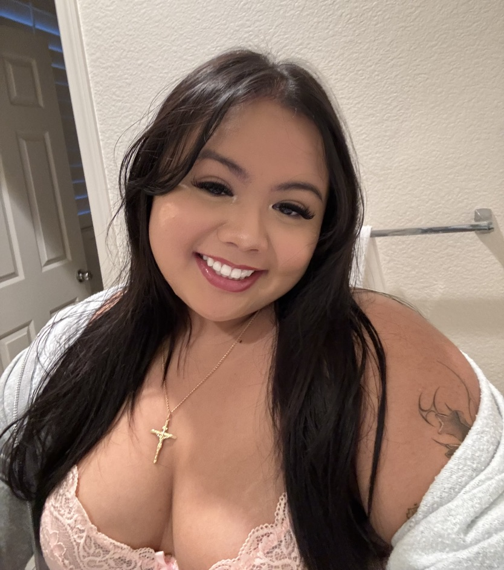
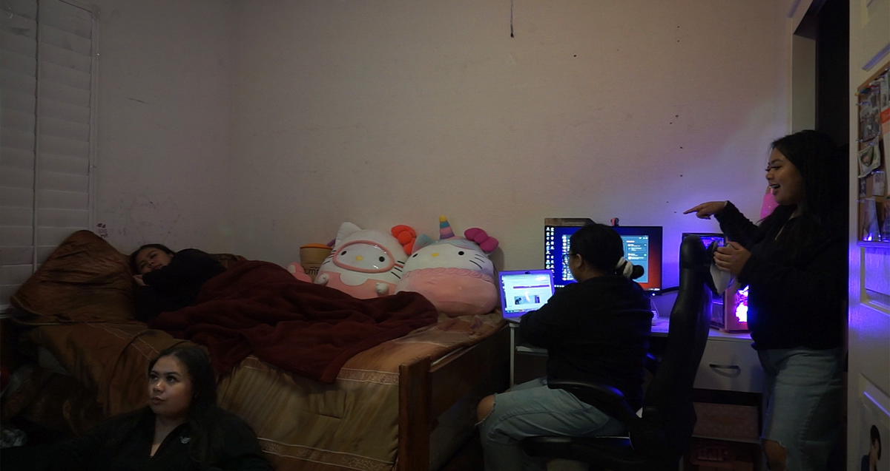
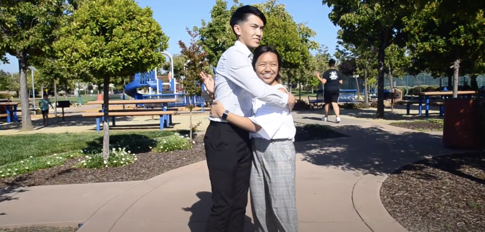
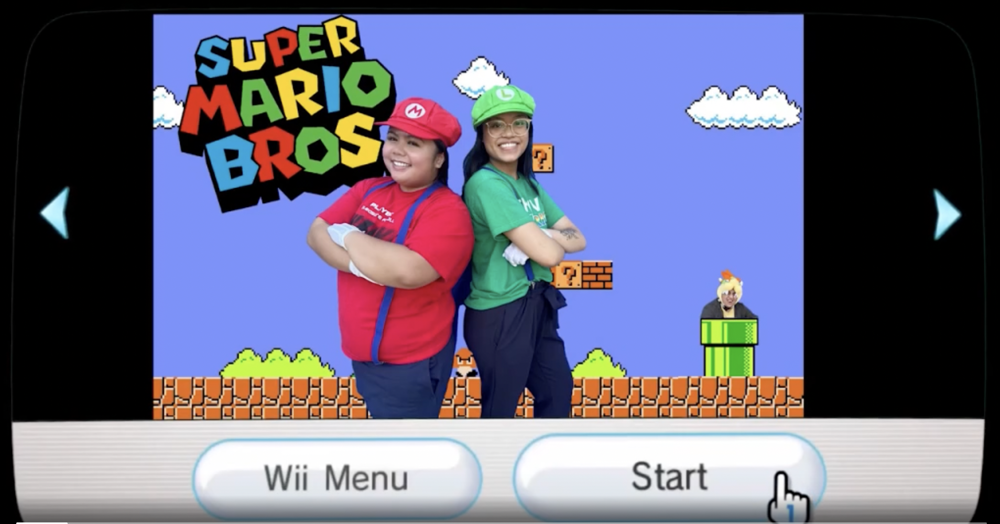
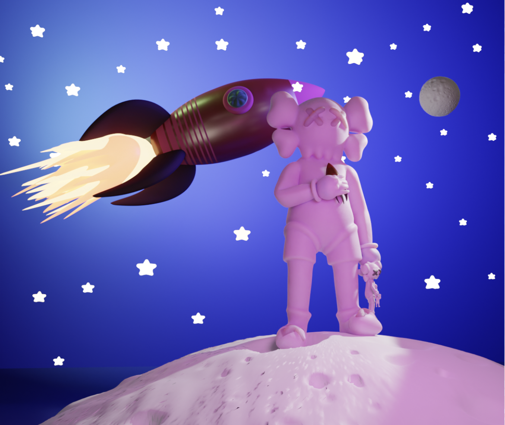
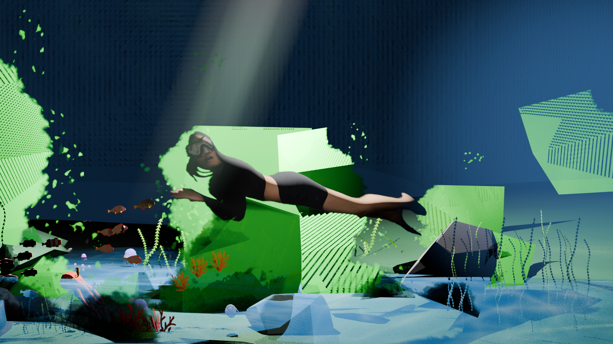

This is me ^_^
Art has always been my escape—my way of navigating the world through creativity. I first discovered my love for art at the age of five, doodling on my homework despite getting in trouble for it. What once was a childhood habit has now become an integral part of my creative process, guiding me toward new artistic endeavors. For me, creating art is a delicate balance between focus and distraction. Immersing myself in the process allows ideas to flow naturally, while moments of spontaneity help me see my work from new perspectives. Sometimes, I create without a clear direction, embracing the uncertainty as part of my unique process. Beyond drawing, I have expanded my skills into videography, video editing, digital overlays for media streamers, photo editing, and digital art. My work is not just about the final outcome—it's about conveying emotion and meaning, allowing my audience to connect with the stories within my art. Art, to me, is more than a form of expression; it is a universal language—one that transcends boundaries, challenges perceptions, and communicates the ineffable.
Back to homepageProjects
Here are of my artworks. Enjoy!
The Clones
A photography series where I experimented with multiple exposures to create "clones" of myself and my friends.
My first experiment in the series, starring myself.

This is my friend Juliana and her clones.

This is my cousin Ken and his clones.

This is my best friend Kamilia and her clones.
This is my other best friend Yen and her clones.
This is my friend Nico and his clones.
Videos
Romantic vs. Emotional Love
A short film exploring the contrast between romantic love and platonic emotional connections.
Watch the videoSuper Mario Bros Dupee
This is an edit of my friend Alyssa and I. Using premier pro.
Watch the video3D Models
In Space
Made by Blender
Underwater Alyssa
Made by Blender.
Watch the videoEducation
San Jose State University, San Jose, CA
Undergraduate: Digital Media Arts (08/2022 - Current)
Chabot College, Hayward, CA
Associate of Arts: Graphic Design (05/2022)
Mount Eden High School, Hayward, CA
High School Diploma (06/2019)